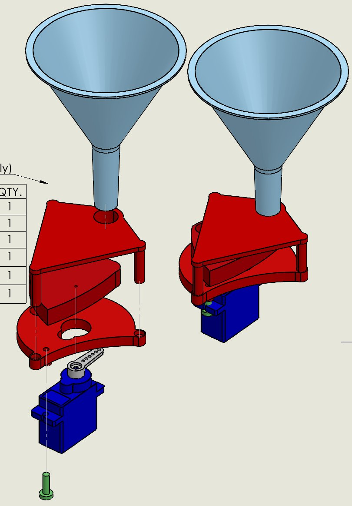
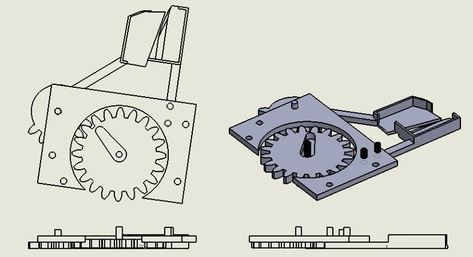
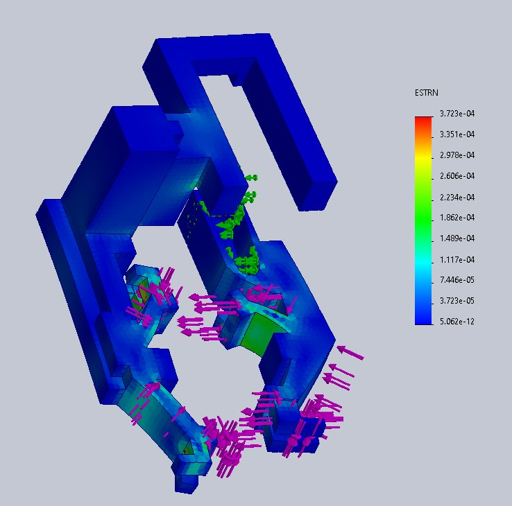
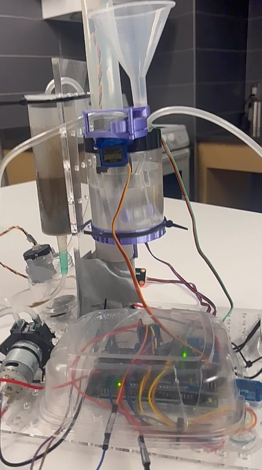
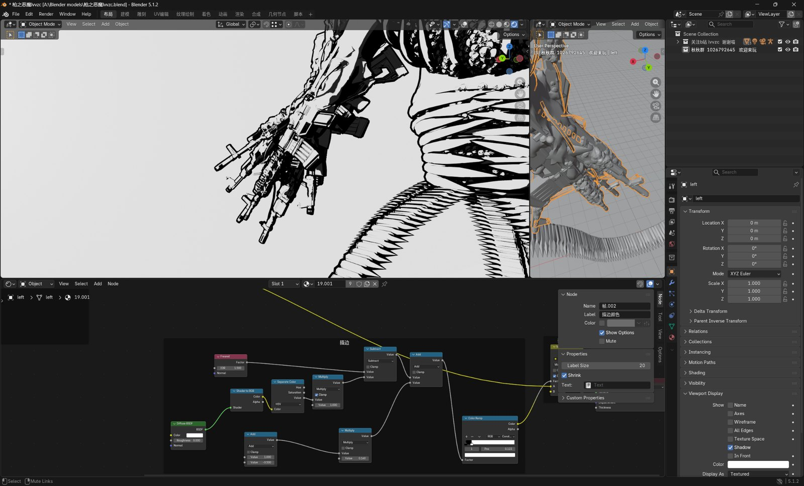

Engineering software
CAD · Simulation · Prototyping
SolidWorksAutoCADNXMATLABArduinoBlender







A practical engineering stack for mechanical design, drafting, numerical analysis, prototyping, simulation, and technical modeling.